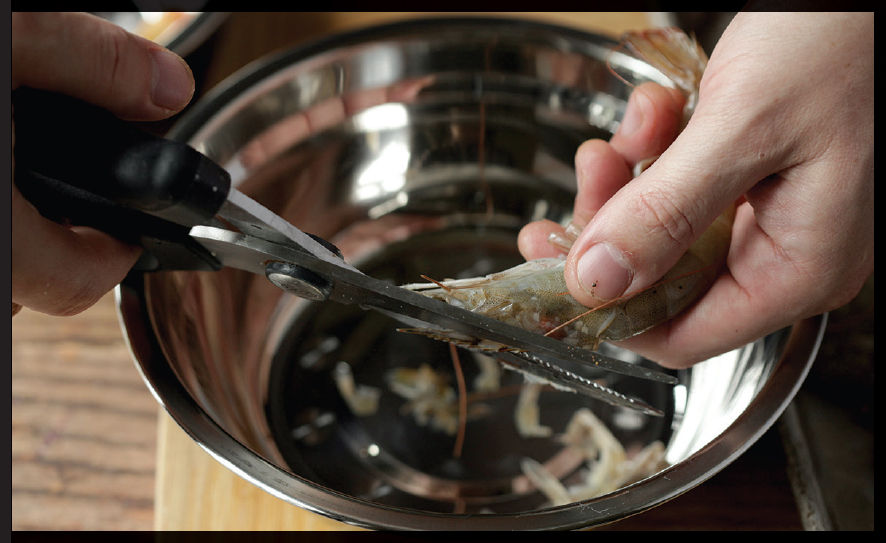
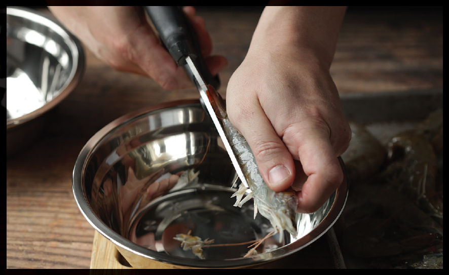
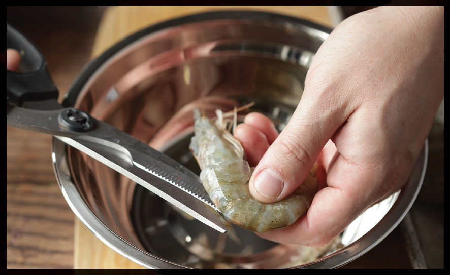

How to Prepare Shrimp for Pepper and Salty Shrimp
Cantonese pepper and salty shrimp is best made with whole shell-on shrimp. If you can find live shrimp with their heads intact, this is your best option. If you cannot find live shrimp, go for headless frozen shrimp.
EZ-peel shrimp are the easiest option for this dish, as they require no prep work at all. For other options, here’s what you need to do.
Step 1 • Snip the Beak and Antennae

If using live shrimp, place them in a single layer on a tray in the freezer for several hours to humanely kill them. Thaw before proceeding.
Head-on shrimp have a sharp pointed beaklike protrusion at the front of their heads that can prick diners if they aren’t careful. Snipping it off with a pair of kitchen shears helps preclude this. I also snip the antennae off at the base. They aren’t edible and make for messy presentation.
Step 2 • Snip off the Legs

Hold the shrimp in one hand, straightening out its back so that all of its legs are exposed. Use kitchen shears to trim them off.
Step 3 • Butterfly and Devein

Slip your kitchen shears underneath the first segment of the shrimp’s abdomen (for shell-on shrimp, that’s the first segment behind the carapace of the head) and snip along the shrimp’s back down to the last segment before the tail. (You should cut through a total of five segments.) Rinse the shrimp, opening up its back with your fingers and pulling out any bits of dark digestive tract you see in the process.